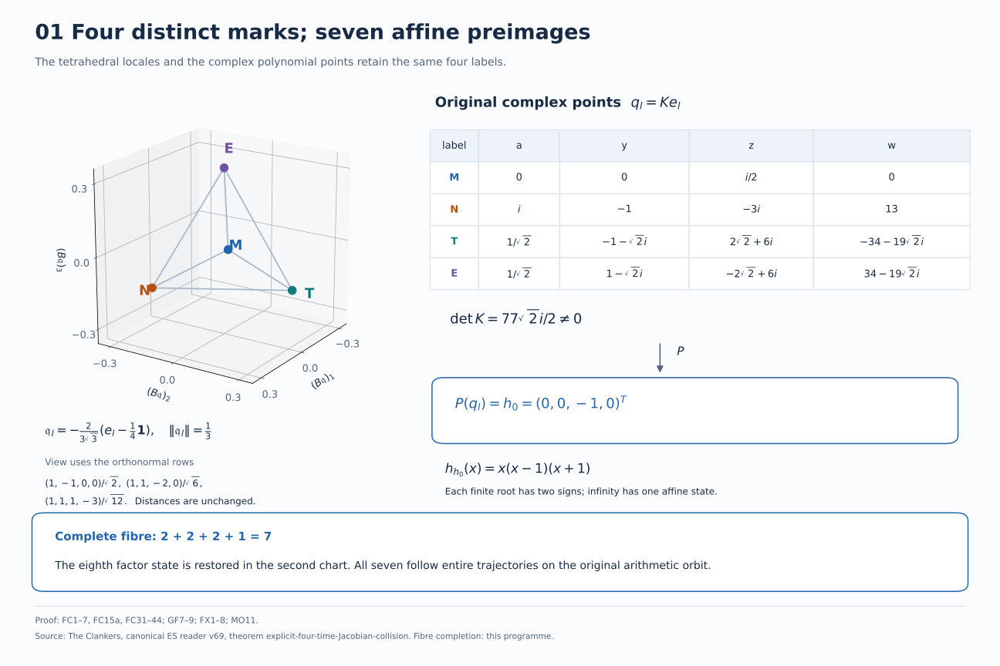
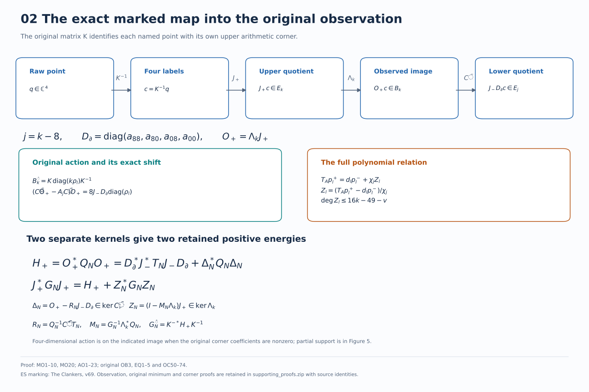
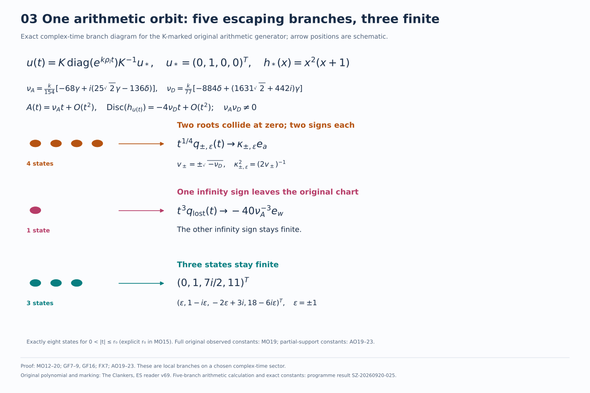
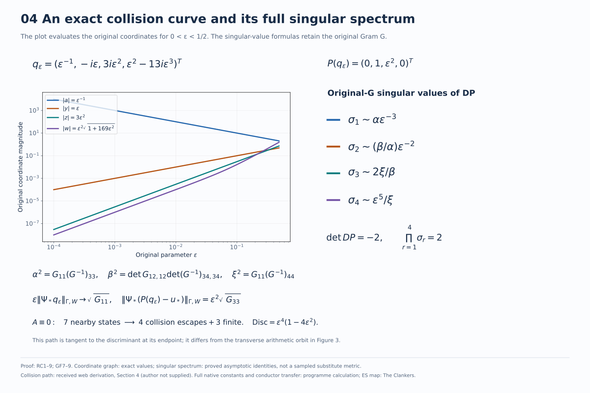
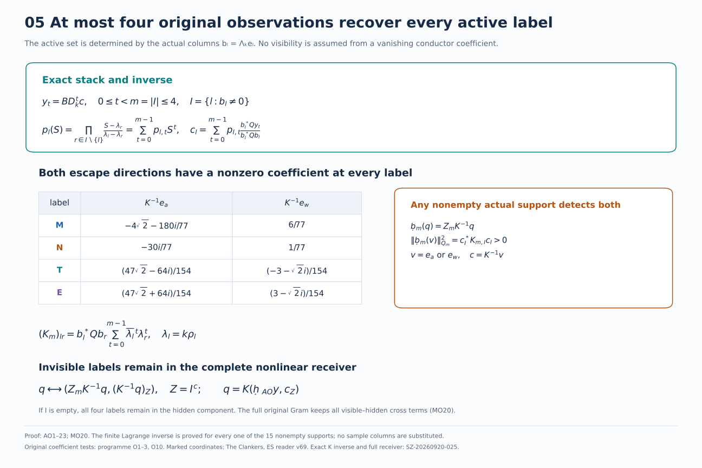
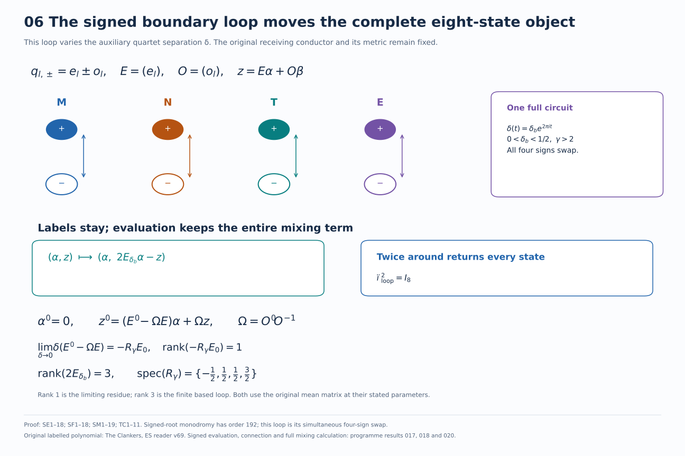
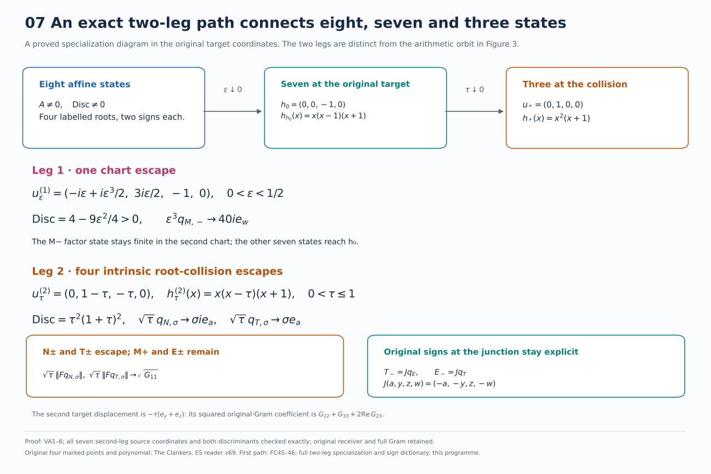

Seven figures accompany the complete cumulative proof. Each retains original labels, morphisms, constants and cited provenance. Select an image for its full-size vector version.

Proof locators: FC1–7, FC15a, FC31–44; GF7–9; FX1–8; MO11.Source: The Clankers, canonical ES reader v69, theorem explicit-four-time-Jacobian-collision. Fibre completion: this programme.

Proof locators: MO1–10, MO20; AO1–23; original OB3, EQ1–5 and OC50–74.ES marking: The Clankers, v69. Observation, original minimum and corner proofs are retained in supporting_proofs.zip with source identities.

Proof locators: MO12–20; GF7–9, GF16; FX7; AO19–23. These are local branches on a chosen complex-time sector.Original polynomial and marking: The Clankers, ES reader v69. Five-branch arithmetic calculation and exact constants: programme result SZ-20260920-025.

Proof locators: RC1–9; GF7–9. Coordinate graph: exact values; singular spectrum: proved asymptotic identities, not a sampled substitute metric.Collision path: received web derivation, Section 4 (author not supplied). Full native constants and conductor transfer: programme calculation; ES map: The Clankers.

Proof locators: AO1–23; MO20. The finite Lagrange inverse is proved for every one of the 15 nonempty supports; no sample columns are substituted.Original coefficient tests: programme O1–3, O10. Marked coordinates: The Clankers, ES reader v69. Exact K inverse and full receiver: SZ-20260920-025.

Proof locators: SE1–18; SF1–18; SM1–19; TC1–11. Signed-root monodromy has order 192; this loop is its simultaneous four-sign swap.Original labelled polynomial: The Clankers, ES reader v69. Signed evaluation, connection and full mixing calculation: programme results 017, 018 and 020.

Proof locators: VA1–6; all seven second-leg source coordinates and both discriminants checked exactly; original receiver and full Gram retained.Original four marked points and polynomial: The Clankers, ES reader v69. First path: FC45–46; full two-leg specialization and sign dictionary: this programme.